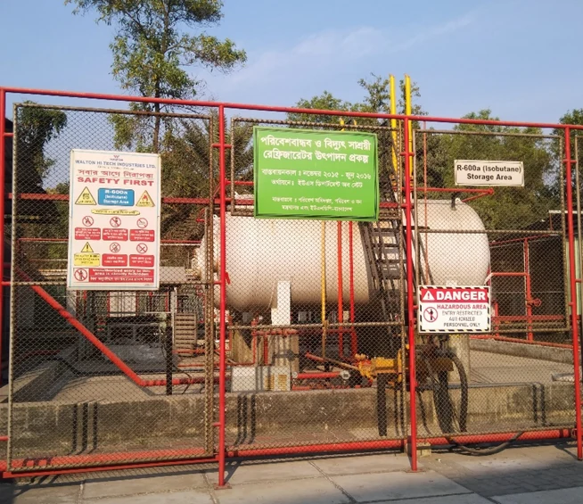

Feasibility onlyBulk R600a refrigerant-vapor recovery feasibility
R600a
Feasibility
Assessed residual refrigerant and proposed recovery options across bulk gas handling; vendor system was evaluated but not commissioned.
My involvement: Engineering feasibility and process analysis
Evidence: System evaluated, not implemented. Cost, payback and tank identifiers withheld from public portfolio.